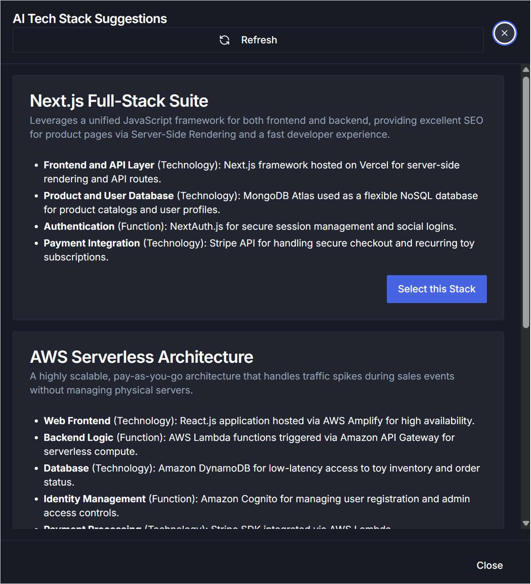
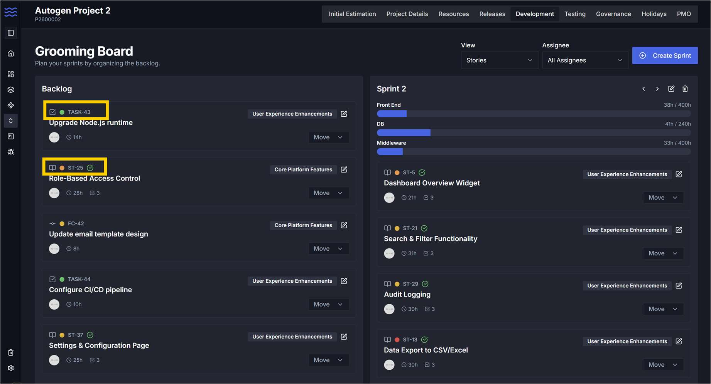
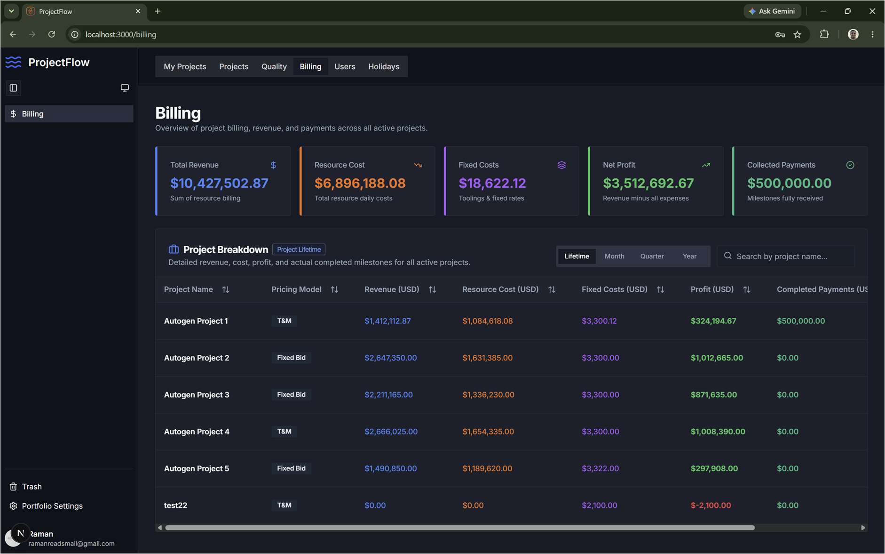
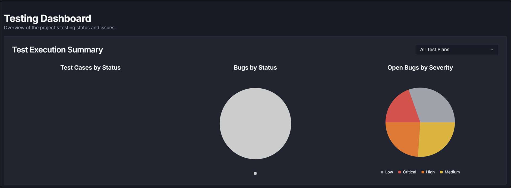
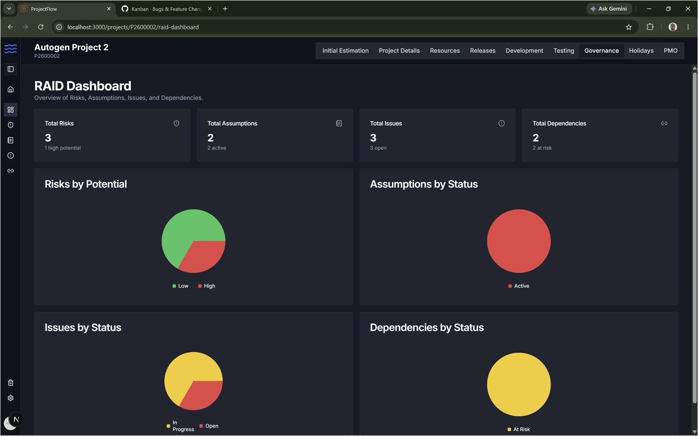
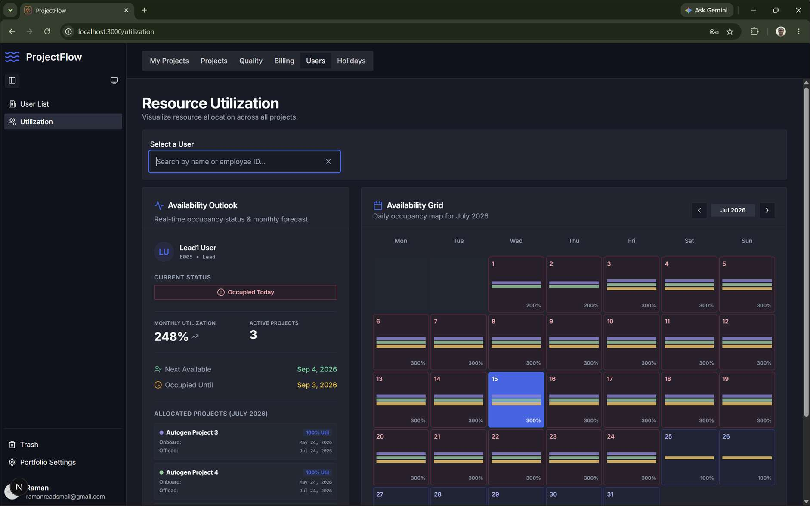

Screenshot Preview
Workwayz bridges the gap between client financials and technical execution. From AI-driven architectural estimation to Fixed-Bid & T&M billing, hybrid release trains, and QA governance. Deploy anywhere with Supabase or Firebase.
Project managers live in spreadsheets and legacy PPM suites. Developers and leads live in Jira or Linear. Neither tool understands client contracts, architectural sub-tasks, or profit margins. Workwayz unites both.
Explore how Workwayz handles every phase of the project lifecycle from proposal pitch to production sign-off.
Paste your project summary and let Workwayz's AI engine generate 3 tailored technology architecture stacks, recommend agile horizontal staffing models, and compute realistic baseline man-days before committing to quotes.
Generates full-stack options (e.g. Next.js, AWS Serverless, microservices) with mapped impacted subsystems.
Intelligently balances role percentages for PM, QA, Solution Architecture, DevOps, and UI/UX design.
Run locally with Ollama / LM Studio for 100% private data, or connect Google Gemini, Claude, and OpenAI.

Agile teams shouldn't force monolithic stories onto a single developer. Workwayz allows tech leads to break requirements down into system sub-tasks with readiness gating and story-point-to-hours conversion.
Visual green badges guarantee every impacted system has estimated subtasks before a story enters the sprint.
Deliver in agile sprints while satisfying client billing contracts with automated point-to-hour conversions.
Toggle between high-level Story progression and granular Sub-Task execution with real-time assignee filters.

Know your exact margins before, during, and after release. Track Fixed Bid (FB) milestones and monthly Time & Material (T&M) billing with automatic adjustments for Loss of Pay (LOP) and server costs.
Calculates internal resource cost versus client daily billing rate to show true gross profit in real time.
Track server hosting, repository licenses, and one-time setup costs alongside billable labor.
Monitors invoiced amounts versus actual cash collections with immutable milestone status audit histories.

Catch bugs before they escape to production. Workwayz tracks SIT, UAT, and Production defect leakages, provides dedicated defect triage boards, and ensures 100% story test coverage.
Measure QA efficiency by phase to understand whether bugs are discovered early or leaking downstream.
Track daily executed test cases against newly logged defects for accurate release readiness forecasting.
Kanban-style triage pipeline (In Triage, Defect Backlog, In Progress, Retest, Closed) mapped directly to stories.

Automate project governance. Let AI generate common project risks, assumptions, and third-party dependencies from requirements, while keeping critical environment credentials and disaster recovery plans audit-ready.
One-click AI extraction of project risks, architecture assumptions, and third-party API dependencies.
Centralized register of environment URLs, SSL/domain expiry dates, git repositories, and designated backup resources.
Enforce governance rules: SOW required to kick off development, QA sign-off mandatory before production deployment.

Eliminate double-booking and illegal multi-project work. Track developer availability across projects, forecast capacity by architectural competency, and automatically reflect approved leave across active sprints.
Visual calendar showing current workload, next available date, and over-allocation percentages.
Leaves booked in the central tracker automatically reflect across every project sprint the engineer is assigned to.
Define global corporate holidays with per-project timezone and offshore team calendar overrides.

Every detail in Workwayz was crafted from decades of engineering delivery and project management experience.
Stop arguing over abstract points vs billable hours. Configure custom point-to-hour multipliers and get instant conversions for client budgets without ruining team velocity.
Tech leads can view all unassigned sub-tasks across Frontend, Middleware, DB, and Auth in one streamlined grid and assign them in bulk with single-click efficiency.
Full page-level and CRUD-level permission controls tailored for Administrators, Senior Management, Project Managers, Tech Leads, Team Members, and PMO Auditors.
Deliver agile sprints directly into structured enterprise release trains with stages, milestone dates, design freezes, and code freezes cleanly visualized.
Built-in governance gateways ensure SOW agreements exist prior to sprint kickoff and QA sign-offs are formally verified before code is promoted to production.
Protect critical project history. Auto-archive closed projects to save compute, with 30-day soft-delete protection allowing administrators to restore any item with ease.
See how Workwayz eliminates the need to juggle 4 separate SaaS subscriptions.
| Core Capability | Workwayz | Jira Software | Linear | ClickUp | Excel / Sheets |
|---|---|---|---|---|---|
| Self-Hostable (Docker / NPM) | Files only | ||||
| AI Tech Stack & Baseline Estimator | |||||
| Fixed-Bid & T&M Financial Invoicing | Basic | Manual math | |||
| Story Points ↔ Hours Bridge | Manual | ||||
| Architectural Sub-Tasks (FE/BE/DB/Auth) | |||||
| Full QA Test Plans & Defect Leakage | |||||
| Autonomous RAID & BCP Vault | |||||
| Per-Seat User Tax |
No complicated database migration scripts. Workwayz boots with a self-guided configuration wizard right in your browser.
Point to your Supabase instance (cloud or local Docker) or paste your Firebase project credentials.
Authenticate via Firebase Auth or Supabase Auth. Enable Google SSO or GitHub SSO with single toggles.
Establish your master administrative account to govern user onboarding, billing rates, and RBAC matrix.
Input an API key for Google Gemini, Claude, or ChatGPT — or point to a local Ollama server for 100% private AI.
Review your configuration summary, click Finish, and immediately begin managing portfolios.
Yes! Workwayz is fully compatible with local, air-gapped, or intranet environments. You can run Supabase locally via Docker and pair it with a local LLM engine like Ollama or LM Studio. No telemetry, no external calls, 100% data sovereignty.
Agile purists prefer story points, while clients and finance teams demand billable hours and delivery dates. Workwayz lets project managers configure a conversion ratio in Project Settings or utilize our quick calculator, ensuring developers can estimate in points while contracts are billed accurately.
In Fixed Bid mode, Workwayz tracks contract payment milestones, milestone completion status logs, and compares total resource costs against agreed contract totals. In Time & Material mode, billing is generated monthly based on active billable days, deducting Loss of Pay (LOP) days and adding billable overtime.
When project managers or senior engineers rotate off a project, teams frequently scramble for environment URLs, SSL expiration dates, repository credentials, and backup contacts. Workwayz includes a dedicated BCP register where these items and designated backup resources are tracked in an audit-ready vault.
You will be able to launch it via npx workwayz@latest, run our official Docker container with docker run -p 3000:3000 workwayz/app, or clone the repository directly from GitHub to customize source code.